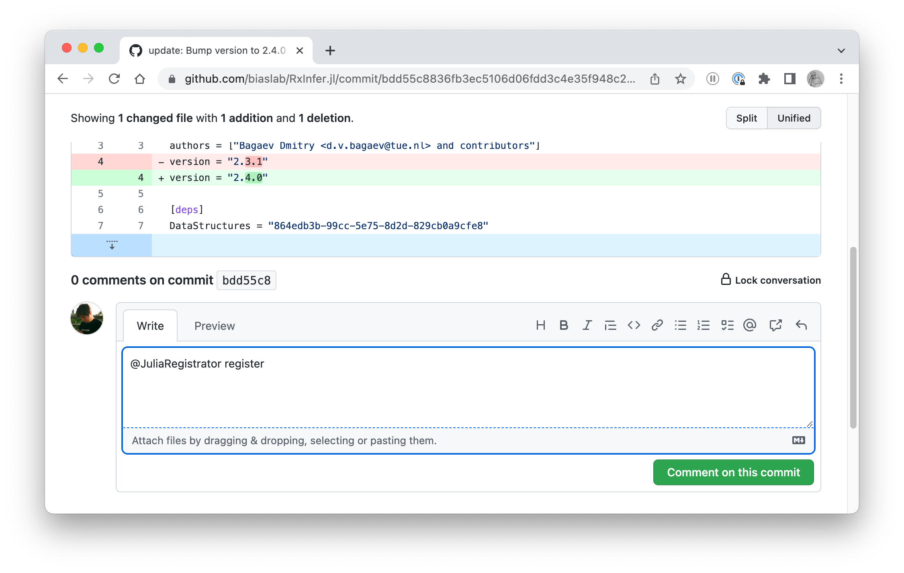

Publishing a new release
Please read first the general Contributing section. Also, please read the FAQ section in the Julia General registry.
Start the release process
In order to start the release process a person with the associated permissions should:
- Open a commit page on GitHub
- Write the
@JuliaRegistrator registercomment for the commit:

The Julia Registrator bot should automatically register a request for the new release. Once all checks have passed on the Julia Registrator's side, the new release will be published and tagged automatically.